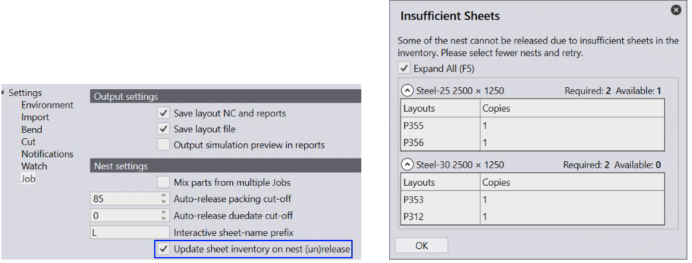

These nest settings can be used to control the auto-nest behavior in Praxis.
Mix parts from multiple Jobs: When enabled, parts from multiple jobs are intermixed on a single layout. When unchecked, jobs are nested in a single-job-at-time standalone mode.
Interactive sheet-name prefix: Praxis uses English letter P as a prefix in the layout names it generates. The name is in format:
Update sheet inventory… on nest (un)release:
Enable switch Update sheet inventory… on factory • settings • job page to update the sheet inventory when a nest is released to (or recalled from) a machine for production. Praxis displays Insufficient Sheets report when the available sheets fall short of the required to complete the production.
● The required sheet count is pulled from the inventory when nests are released for production.
● The sheets are added back to the inventory when the nest is recalled or deleted.
